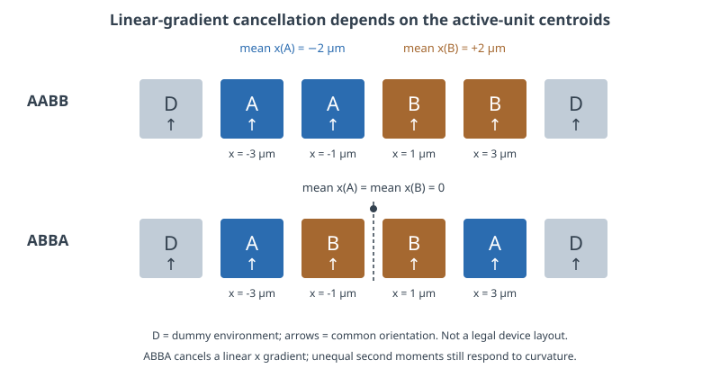
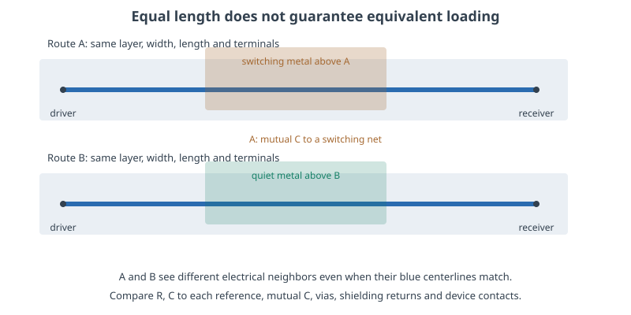

Matching, Layout & Extracted Netlists
A matched schematic becomes a matched circuit only when device surroundings, current paths, capacitances and measurement locations agree.
- Use centroid calculations to separate linear-gradient cancellation from random mismatch.
- Explain why dummies, orientation, routing and fill belong in a matching plan.
- Map an extracted internal node back to a physical point and choose the correct simulation probe.
- Distinguish SPEF, DSPF and extracted SPICE, then check a post-layout result without double-counting parasitics.
1. Match the quantity the circuit needs
Two transistors may have identical schematic dimensions and different operating currents. Two capacitor branches may have identical nominal values and different settling errors. Matching means controlling the difference that matters to the circuit: current ratio, input offset, charge ratio, delay, gain, or another specified response. A symmetric drawing is useful evidence, but the response is the final test.
Separate three causes. Random local variation changes nominally identical devices unpredictably; systematic spatial variation changes their environment with position; interconnect and surrounding structures change their electrical loading. Larger devices can reduce some random mismatch terms. A centroid arrangement addresses certain spatial gradients. Balanced routing addresses differences in resistance and capacitance. These remedies solve different parts of the problem. Lesson 75 develops the random-mismatch model and its coefficient conventions.
Define the operating condition before selecting a pattern. A current mirror must match at the intended drain voltages, temperature and current density. A differential input pair may need equal source resistance and gate coupling, while its drain nodes intentionally have different functions. Matching everything geometrically can add unnecessary route length or capacitance. The DATE 2021 common-centroid study explicitly examines these tradeoffs.
2. Common centroid cancels first spatial moments
Consider equal unit devices whose parameter follows a small linear spatial variation, p(x,y) = p₀[1 + gₓx + gᵧy]. If a branch's effective parameter is the equal-weight average of its units, its gradient contribution depends on the average x and y positions. Two branches with equal centroids therefore cancel the first-order gradient in their difference. For unequal unit contributions, use the circuit's sensitivity weights rather than simply counting boxes.
x̄A = Σwᵢxᵢ / Σwᵢ, ȳA = Σwᵢyᵢ / ΣwᵢBalance both weighted coordinates between A and B.

Worked example: in AABB, A has mean x = −2 µm and B has mean x = +2 µm. An assumed slope of 0.05%/µm produces a B-minus-A error of 0.20% of p₀. ABBA gives both branches mean x = 0 and cancels that linear term. However, their mean squared positions are 9 and 1 µm². Adding an assumed quadratic term of 0.002%/µm² leaves an A-minus-B difference of (9−1) × 0.002% = 0.016%. These coefficients illustrate the mathematics; they are not measured SKY130 gradients.
A common centroid does not remove random device mismatch, nonlinear temperature fields, unequal bias conditions or unequal routing. A hot digital block on one side may produce a curved temperature field across the array. A more elaborate arrangement can balance additional moments, but costs area and interconnect. Compare the resulting electrical error instead of treating one arrangement as universally best.
Check: is ABAB also a common centroid at these four positions?
No. A is at −3 and +1 µm, so its mean is −1 µm. B is at −1 and +3 µm, so its mean is +1 µm. ABAB interdigitates the units, but the centroids differ. Under the example linear gradient, the B-minus-A error is 0.10%.
3. Dummies and orientation control the environment
A device at the edge of an array can have different neighboring diffusion, gate shapes, contacts and isolation than one in the middle. Dummy structures can make active units see more comparable boundaries. Their terminals and wells still require an intentional, electrically safe connection under the selected PDK methodology. “Dummy” does not mean a floating transistor is automatically harmless, nor does a dummy replace a well tap.
Keep active unit orientation and source/drain surroundings consistent unless the device and layout methodology explicitly support another arrangement. Rotating or mirroring a shape can change which edge meets a contact, well boundary, nearby route or another device. A legal placement transform is not evidence that analog parameters are invariant. Match the contact arrays and the route entering each terminal, not merely the gate rectangles. The Cadence differential-pair layout discussion provides practical examples of equal surroundings and routing.
| Layout feature | Question to ask | Electrical consequence |
|---|---|---|
| Unit dimensions and orientation | Are the active units and terminal environments comparable? | Systematic device-parameter differences |
| Dummies, well edges and taps | Do both branches see comparable boundaries and body connections? | Edge effects, body-voltage differences and local substrate coupling |
| Contacts, vias and access routes | Are counts, sizes, layers and current paths balanced? | Series resistance and its voltage drop |
| Metal above, below and beside | Which conductor is quiet, switching, or floating? | Capacitance, interference and settling differences |
| Nearby power dissipation | Do the two branches share the same temperature history? | Drift, time-dependent offset and gain error |
4. Equal wire length is only one constraint
Resistance depends on layer, width, length, contacts and vias. Capacitance depends on the surrounding conductors and dielectric geometry. A route over a quiet plane and a route beside a switching clock can have the same length and very different transient behavior. Matching a differential signal often requires comparing each branch's capacitance to ground and to each relevant aggressor, not just total capacitance.

Worked settling example: assume two otherwise identical high-impedance nodes, each driven through 20 kΩ. Total capacitances of 100 fF and 110 fF give time constants of 2.0 ns and 2.2 ns. After an ideal 100 mV step, their remaining errors at 10 ns are 100e−10/2 = 0.674 mV and 100e−10/2.2 = 1.062 mV. The differential error is 0.388 mV even though both settle to the same final voltage. A DC-only comparison misses this mismatch.
In the runnable Lab 4, a grounded upper-metal patch adds an estimated 3.361 fF to one copy of a route. Actual ngspice simulations of those estimated linear networks give an 8.149 mV pair difference at 10 ns. This is a deliberately high source-resistance example, not characterized SKY130 circuit performance. It shows why matching should be checked after the intended surrounding metal is present.
Floating fill must remain a distinct electrical node or be reduced by an extraction method that preserves its effect. Tying it to ground changes the model. Likewise, a shield only acts as a quiet reference if its connection has sufficiently low impedance across the relevant band. Re-extract after meaningful fill, power-grid or neighboring-route changes. Additional common-centroid interconnect can erase a placement benefit if it creates a larger dynamic mismatch.
5. One net name can contain several voltages
A schematic net normally represents an equipotential connection. Once wire resistance is included, current creates voltage differences along that connection. The extractor replaces the single ideal net with a network of resistors, capacitors and internal nodes. The driver terminal, midpoint and receiver terminal remain logically connected, but their instantaneous voltages can differ.

For example, 2 mA through 0.4 Ω produces 0.8 mV between two points on one supply net. If one waveform is measured at a pad and another at a sensitive device, that difference can be the correct simulation result. Shorting the internal nodes to make names agree would remove the modeled effect.
| Physical question | Lab 4 probe | Meaning |
|---|---|---|
| What voltage is applied before source resistance? | v(src) | Testbench source waveform |
| What reaches the route entrance? | v(sig_drv) | After the assumed 20 kΩ source resistance |
| What occurs at the detour midpoint? | v(xroute.sig_015) | Default detour node at (120,240) µm |
| What does the load receive? | v(sig_rx) | Receiver terminal relative to simulation ground |
The midpoint spelling depends on hierarchy and segmentation. Refining Lab 4 changes its numerical node index, so use the generated coordinate-to-probe CSV. Real extraction can rename instances, flatten hierarchy, merge device fingers and alter delimiter conventions. Preserve terminal identities, port order, instance mapping and coordinates. Compare the physical location before deciding that two differently named nodes are different nets—or that two similar names represent the same point.
6. SPEF, DSPF and extracted SPICE have different roles
| Artifact | Usual content and role | What to verify |
|---|---|---|
| SPEF | Parasitic networks and connectivity references used alongside a design netlist, commonly for timing analysis | Resistance/capacitance units, name map, hierarchy, port mapping, coupling treatment and extraction corner |
| DSPF | SPICE-like detailed parasitic representation; may include device instances and geometric/connectivity annotations | Actual exporter content, device parameters, subcircuit ports and whether the simulator reads the annotations |
| Extracted SPICE | Simulator-oriented devices and/or RC networks in the selected SPICE dialect | Model includes, body terminals, scale, instance parameters, internal-node names and simulator compatibility |
A filename extension does not prove which parasitics or devices are included. Cadence's DSPF documentation describes net and instance sections and the *|P, *|I and *|S annotations used by supported tools. A generic SPICE parser may ignore comment-based geometry. Check the exported content rather than assuming a parasitic-only network or a complete transistor netlist.
OpenRCX extracts routed LEF/DEF-based geometry using process- and corner-specific calibration and can export SPEF. Its coupling threshold can convert small coupling terms into grounded capacitance. Such reduction may suit one timing task yet hide a sensitive analog aggressor. Similarly, a simulator does not acquire a SPEF parser merely because it accepts SPICE netlists. Lab 4 exports ordinary RC SPICE directly.
7. Make post-layout comparisons diagnostic
Start with connectivity and model accounting. Confirm the extracted circuit's ports, device identities, body connections and intended dimensions before interpreting a gain or delay change. Run the same bias and stimulus in the schematic and post-layout benches. A changed source impedance, load, supply reference or initial condition can create a larger difference than the parasitics themselves.
Then add complexity in useful stages: resistance effects, capacitance loading, full mutual coupling, and the final surrounding metal. These stages are diagnostic experiments, not replacements for the complete result. Keep device-model intrinsic capacitances separate from layout parasitics according to the PDK's extraction conventions. Adding every capacitance from several representations can double-count a physical effect.
Record the layout and PDK revisions, tool version, extraction style, corner, temperature assumptions, reduction thresholds and fill state with each result. Use numerical refinement to establish that the simulator has resolved the selected model. Use comparison against an appropriate reference or qualified flow to establish the model's physical adequacy. Neither a converged waveform nor a passing LVS result alone proves analog performance.
Check: the extracted receiver is slower, but the driver waveform matches. What should you inspect?
First confirm that both probes refer to the intended physical terminals and reference. Inspect route resistance, load and distributed capacitance between them. Check whether coupled capacitance sees a quiet or switching neighbor. Keep the testbench identical. A matching driver waveform does not imply the receiver sees an ideal wire.
Check: does a passing pre-fill matching simulation cover later metal fill?
Only if the model already represents the final surroundings adequately. Changed fill can alter branch loading and coupling. Repeat extraction and the relevant dynamic/matching checks with the intended fill state. In Lab 4, the final DC equality survives the added patch while transient equality does not.
Key takeaways
- Common centroid cancels defined spatial moments; it is not a universal mismatch cure.
- Match device surroundings, orientation, contacts, routing and temperature as required by the circuit.
- Equal wire length does not imply equal loading or equal coupling to aggressors.
- Use physical location and extraction mapping to select internal probes.
- Verify file contents, units and parasitic accounting before trusting a post-layout comparison.
Sources & scope
Checked 6 November 2026. Layout figures and calculations are original teaching examples. No placement pattern, statistical coefficient or extracted performance in this lesson is a foundry qualification.
- Sharma et al., DATE 2021: Common-Centroid Layouts for Analog Circuits—Advantages and Limitations — primary research on variation and routing tradeoffs.
- Cadence: Balancing analog layout parasitics in MOSFET differential pairs — equal environments, dummies and interconnect balance.
- SKY130 parasitic layout extraction tables — coefficients used by the explicitly approximate Lab 4 estimator.
- OpenROAD/OpenRCX documentation — extraction model, calibration, coupling reduction and SPEF output.
- Cadence: Using DSPF post-layout netlists — file content, annotations and parser-dependent behavior.
- Magic extresist reference — distributed resistance, network reduction and coupling representation. Version-specific settings must be checked against the installed tool.
All 84 lessons
- Part I · Foundations: the physical chip and its vocabulary
- 1. What Is a Chip? Board, Package & Die
- 2. The Silicon Wafer: From Crystal to Dies
- 3. How a Die Is Built: SKY130 Layers & Lithography
- 4. The MOSFET: SKY130’s Transistor
- 5. Anatomy of a Die: Core, Pad Ring & Seal Ring
- 6. Packages: Wire Bonds, Flip-Chip, QFN & WLCSP
- 7. The PCB and the Path to the Transistor
- 8. The Design Flow and Its Files: RTL to GDS
- 9. Signals Primer: DC, AC, RMS, Decibels & the FFT
- Part II · Transistors to logic gates
- 10. Logic Gates at the Transistor Level
- 11. Drive Strength & Transistor Sizing
- 12. More Gate Topologies
- Part III · Standard-cell layout
- 13. Site Rows & Standard Cell Placement
- 14. The Power Grid & Routing Grids
- 15. Metal Layers, Vias & the Stackup
- 16. Inside a Standard Cell's Layout
- 17. The Cell Template: Tracks, Sites & Edges
- 18. Anatomy of a Bigger Cell
- 19. Pin Access & Porosity
- 20. A Flip-Flop From the Inside
- Part IV · Loads, timing and interconnect
- 21. Loads
- 22. Liberty Files: What a Cell Library Records
- 23. Reading Liberty Timing Tables
- 24. Standard-Cell Characterization: How Liberty Is Made
- 25. Timing
- 26. Setup and Hold
- 27. Latch-Based Design & Time Borrowing
- 28. Routing Resistance and Parasitics
- 29. Delay from Physics: Transistor, Contact, Via, Wire & Gate
- 30. Electromigration
- 31. Reliability & Aging: HCI, BTI, TDDB & Self-Heating
- 32. DFM, Variation & Yield: A Digital View
- Part V · Digital implementation
- 33. RTL Patterns: FSMs, Handshakes, Resets & Lint
- 34. RTL, Synthesis & Timing Constraints
- 35. The Clock Tree
- 36. Clock Generation: Oscillators, DCO, PLL & Jitter
- 37. Clock Gating & Power States
- 38. Power Analysis & Low-Power Cells
- 39. Clock-Domain Crossings & Reset
- 40. Scan
- 41. DFT Beyond Scan: Faults, ATPG, BIST and JTAG
- 42. A Timed Logic Path: Registers, Clocks, Scan & Speed/Power
- 43. Memories: SRAM, OpenRAM and DFFRAM
- 44. Datapath & Arithmetic
- 45. Multi-Corner STA: OCV, CRPR & Hold Cells
- 46. Functional Verification: Testbenches, Assertions, Formal & Gate-Level Sim
- Part VI · Physical cells and the floorplan
- 47. Fill Cells
- 48. Well Taps and Latch-up
- 49. Endcaps
- 50. Tie Cells
- 51. Antenna Diodes
- 52. Decap Cells
- 53. Spare Cells and ECO
- 54. Level Shifters
- 55. Floorplan
- 56. Caravel Integration: The User Project Wrapper
- 57. Hierarchical Design, Abstracts & ECO
- 58. Placement: Global, Legalization & Detailed
- 59. Routing & Timing Closure
- 60. Digital Signal Integrity: Crosstalk Delay & Glitch
- 61. Metal Fill and Cell Fill
- 62. Physical Verification Signoff
- 63. Power-Integrity Signoff: Static IR, Dynamic IR & EM
- Part VII · The chip boundary: I/O, ESD and package
- 64. The I/O Ring
- 65. ESD and Clamps
- 66. I/O Fill
- 67. RDL Routing
- 68. I/O Power and IR Drop
- 69. Power, Package & Thermal Coupling
- 70. Tapeout, MPW & Tiny Tapeout
- 71. Post-Silicon Bring-Up, Test & Characterization
- Part VIII · Analog circuits
- 72. Analog Bias, gm & Headroom
- 73. Feedback, Loading & Stability
- 74. Differential Pairs, Common Mode & CMFB
- 75. Noise, Mismatch & Variation
- 76. References, Temperature & Startup
- 77. Comparators & Power Management: StrongARM, LDO & POR
- 78. Matching, Layout & Extracted Netlists
- Part IX · Mixed-signal: sampling, conversion and verification
- 79. Sampling, Aliasing & Settling
- 80. ADC & DAC Interfaces
- 81. FFT, Noise & Distortion Measurements
- 82. Calibration, Trimming & Testability
- 83. Crosstalk, Return Paths & Isolation
- 84. Mixed-Signal Verification & Bring-Up
Updated 11 November 2026 · 84 lessons · Offline lessons, diagrams, source code and recorded results · External references require internet access.